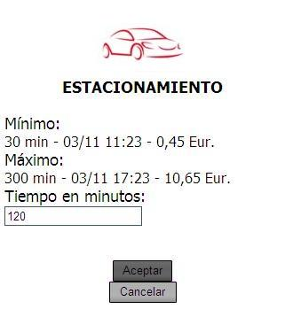

Servicio de pago remoto del estacionamiento de Mugipark
Manual de usuario
El servicio de pago remoto por móvil del estacionamiento de Mugipark tiene como objetivo fundamental que los usuarios puedan realizar las operaciones referentes al sistema sin necesidad de acercarse a un parquímetro. Para ello contarán con un servicio basado en web que permitirá llevar a cabo las diferentes funcionalidades del sistema.
Para comenzar a usar este servicio es necesario darse de alta, mediante el formulario online. Es necesario rellenar los datos obligatorios, y la contraseña se enviará de forma automática vía e-mail, pudiendo el usuario cambiarla en cualquier momento.
Recuerde:
Para su identificación en el servicio, es necesario que solicite su distintivo
al controlador mas cercano, y lo adhiera en el parabrisas de su vehículo.
Esta identificación es necesaria ya que usted no dispone de tique físico.
Acceso al pago por web:
Una vez dado de alta en el servicio, el usuario podrá acceder vía web al mismo, debiendo introducir usuario y contraseña para comenzar.

Al introducir los datos de inicio, el sistema visualizará el menú principal:

Opción Estacionar:
Al seleccionar esta opción el usuario tendrá la opción de seleccionar una matrícula entre las que ha usado en anteriores ocasiones (por defecto sale la última usada), ó introducir una nueva matrícula.
Una vez seleccionada la matrícula, se pulsa el botón “Aceptar”. El sistema pide que se seleccione zona ESRO (azul) ESRE (naranja).
Cuando se pulsa aceptar en el después de seleccionar el sector, el sistema comprueba los datos para ver si es posible realizar la operación. En caso afirmativo, se mostrará una pantalla donde se pedirá al usuario que introduzca el tiempo en minutos que desea estacionar.

Una vez introducido el tiempo en minutos, se pulsa el botón “Aceptar”. El sistema calcula automáticamente el importe relacionado con el tiempo introducido y lo visualiza en pantalla. Si se está de acuerdo, se pulsará el botón “Aceptar” para confirmar la operación. En caso contrario, el sistema permite corregir el tiempo introducido.
Se le confirmará que la operación del estacionamiento se ha realizado con éxito, mostrando los datos de dicha operación.
Opción Desaparcar:
Cuando el usuario quiera desapartar su vehículo, tendrá la posibilidad de realizar la devolución del importe previamente abonado y no consumido.
Para ello, deberá pulsar el botón “Desaparcar” del menú principal. El sistema pedirá al usuario que seleccione la matrícula correspondiente al vehículo que quiere desaparcar.
Una vez seleccionado, se pulsará el botón “Aceptar”, y aparecerá una pantalla en la que se visualizarán los datos relativos a la devolución (importe a devolver). Si se está de acuerdo, se pulsará “Aceptar” para confirmar la operación.
Se le confirmará que la operación de desaparcar se ha realizado con éxito, mostrando los datos de dicha operación.

Opción Pagar Denuncia
El sistema permite el abono de denuncias, siempre y cuando éstas estén dentro del plazo establecido en la ordenanza para su pronto pago. Para realizar la operación se pulsará en el botón “Pagar Denuncia” del menú principal. Posteriormente, únicamente habrá que introducir el número de expediente que aparece en el ticket de aviso de denuncia (sin guiones). Una vez introducido el número de expediente, se pulsará el botón “Aceptar”.

El sistema comprobará automáticamente los datos relacionados a dicho número y los mostrará en la pantalla (matrícula, fecha, importe, artículo…). Si se está de acuerdo con los datos, se pulsará “Aceptar” para confirmar el pronto pago, y la sanción quedará automáticamente anulada.
Se le confirmará que la operación del pago de la denuncia se ha realizado con éxito, mostrando los datos de dicha operación.